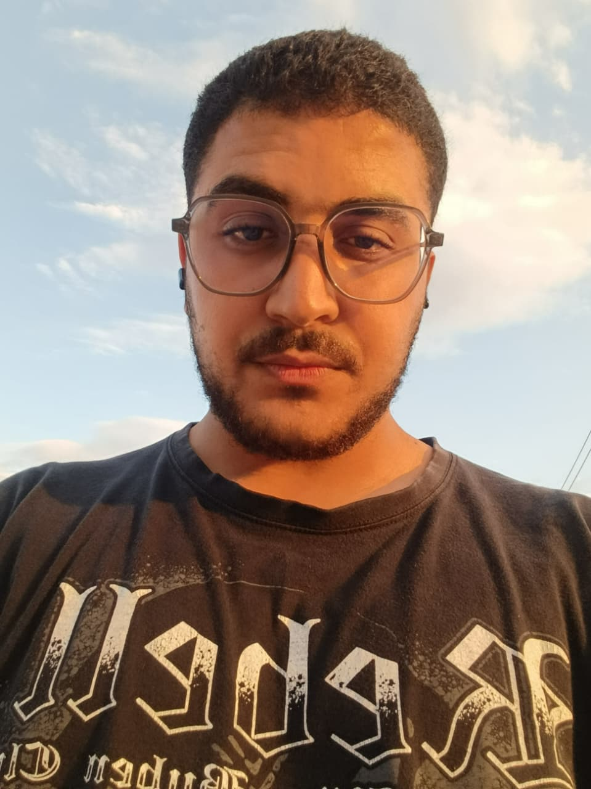

Licence Appliquée en Informatique
Spécialité Développement Web
ISET Sidi Bouzid · 2024 – en cours
BONJOUR, JE SUIS
Je conçois des applications web full-stack en combinant des interfaces intuitives, des API robustes et des bases de données bien structurées. Curieux et motivé, j'aime transformer les idées en solutions utiles.

J'AIME CONSTRUIRE DES PRODUITS WEB ✳ APPRENDRE DE NOUVELLES TECHNOLOGIES ✳ RÉSOUDRE DES PROBLÈMES CONCRETS ✳
01 / À PROPOS
Je suis étudiant en Licence Appliquée en Informatique, spécialité Développement Web, à l'ISET Sidi Bouzid.
Mon parcours m'a permis d'explorer le développement front-end et back-end, la conception de bases de données et la création d'API. Mes expériences chez Tunisie Telecom et au Ministère de la Famille m'ont également appris l'importance du travail en équipe et du contexte professionnel.
Mon objectif est de poursuivre ma formation en France dans les domaines du développement web et du génie logiciel, tout en continuant à développer des projets concrets.
Discutons ensemble ↗Apprendre, construire, améliorer : une démarche au quotidien.
Spécialité Développement Web
ISET Sidi Bouzid · 2024 – en cours
Nationalité tunisienne
Arabe : langue maternelle
Français : TCF Tout Public, niveau B1
02 / PARCOURS
Des expériences professionnelles et une formation tournée vers la pratique.
Ministère de la Famille, de la Femme, de l'Enfance et des Personnes Âgées · Tunisie
Tunisie Telecom · Tunisie
Spécialité Développement Web · ISET Sidi Bouzid
Tunisie
03 / PROJETS
Une sélection de projets personnels et académiques.
01 — AGRITECH
Assistant agricole intelligent : gestion des exploitations et des cultures, planification de l'irrigation sur 7 jours selon la météo, chat agricole basé sur l'IA et diagnostic de plantes par photo.
02 — FULL-STACK
Application web complète avec une interface Angular et une API REST Laravel connectées à une base de données MySQL. Code versionné sur GitHub.
03 — BACK-END
Conception d'une architecture SOA avec opérations CRUD complètes (contrôleur, service et repository) autour d'une entité Étudiant.
04 / COMPÉTENCES
Les technologies et méthodes que j'utilise dans mes projets.
05 / CONTACT
UN PROJET, UN STAGE, UNE OPPORTUNITÉ ?
Je serais ravi d'échanger avec vous. N'hésitez pas à me contacter.